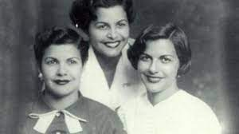
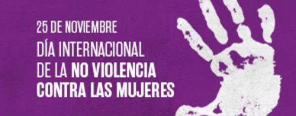

Porque el 25 de noviembre para conmemorar el violento asesinato de las hermanas Mirabal (Patria, Minerva y Maria Teresa) tres activistas políticas asesinadas el 25 de noviembre de 1960 en manos por la policía secreta del dictador Rafael Trujillo en la República Dominicana.
En el mes de noviembre se conmemora el 25N, Día Internacional de la Eliminación de la Violencia contra las Mujeres. En la actualidad, la violencia contra las mujeres y las niñas es una de las violaciones de los derechos humanos más extendidas, persistentes y devastadoras del mundo.
 Pulsa aquí para volver al índice